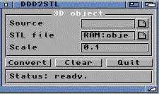

DDD2STLMUI PurposeDDD2STLMUI converts Amiga 3D data handled by ddd.library to ASCII STL. WorkflowAmiga 3D object -> ddd.library -> ASCII STL -> slicer ScaleUse the Scale value to adapt old Amiga 3D objects to real printable dimensions. For a Tina2S-like 100 x 100 mm bed, always check the STL size before slicing. NotesSome old 3D objects were made for rendering, not for 3D printing. They can have missing faces or open geometry. A repair tool may be needed on the PC side. |